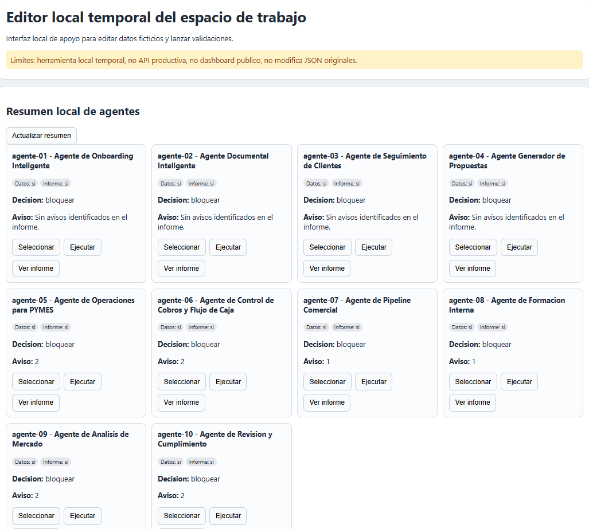
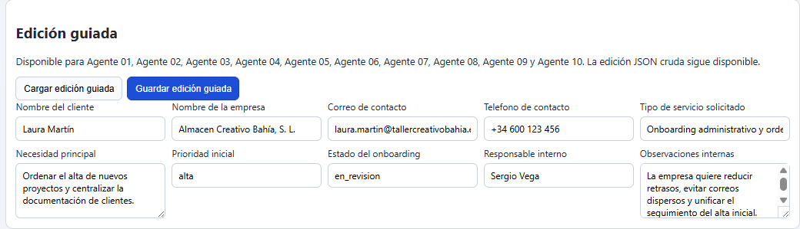
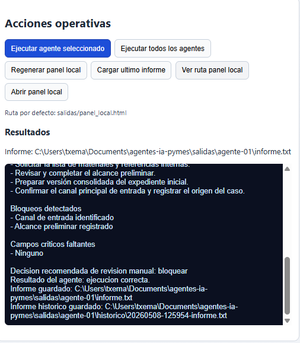
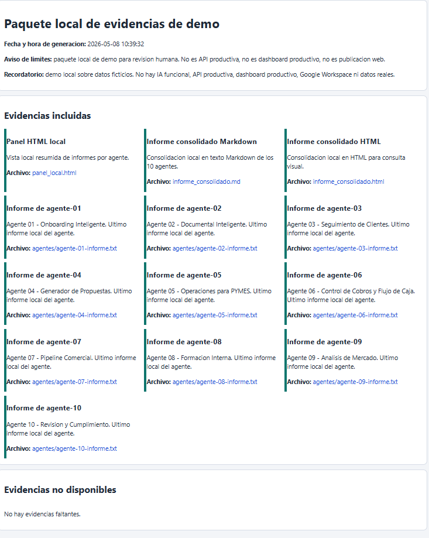

Agentes
Flujos supervisados, herramientas, clasificación, soporte y toma de decisiones asistida.
Portfolio · demos · prototipos ejecutables
Selección completa del bloque portfolio/: agentes, RAG
(Retrieval-Augmented Generation – Generación Aumentada por Recuperación) documental,
análisis de negocio, contratación, normativa, atención al cliente y dashboards consultables en lenguaje natural.
Cada proyecto funciona como evidencia técnica. Muestra enfoque, estructura y límites; no pretende presentarse como solución empresarial cerrada.
Flujos supervisados, herramientas, clasificación, soporte y toma de decisiones asistida.
Recuperación semántica, consulta de contratos, normativa y documentación interna con evidencias.
Comercio exterior, licitaciones, evaluación de ideas, dashboards y lenguaje natural sobre datos.
Nuevo · proyecto destacado
Arquitectura modular, validación y evidencias reproducibles
Repositorio técnico en castellano con 10 agentes locales para PYMES (Small and Medium-sized Enterprises – Pequeñas y Medianas Empresas), validación automatizada, consola local, edición guiada, ejecución local, informes, histórico, comparador y paquete de evidencias reproducibles.
Proyecto de portfolio orientado a demostrar estructura técnica, trazabilidad y límites claros antes de hablar de agentes productivos. La V1 local trabaja con datos ficticios y mantiene la decisión final bajo revisión humana.
Límites: Proyecto local de portfolio. No incluye IA (Artificial Intelligence – Inteligencia Artificial) funcional, API (Application Programming Interface – Interfaz de Programación de Aplicaciones) productiva, dashboard productivo, Google Workspace, integraciones reales ni datos reales.
Ver repositorio →



11 proyectos
Una lectura ordenada del portfolio: qué problema aborda cada proyecto, en qué dominio opera y qué tipo de capacidad técnica permite revisar.
Agente orientado a comparar países, sectores y oportunidades de mercado mediante análisis asistido por inteligencia artificial.
Ver proyecto →Prototipo de agente capaz de coordinar herramientas y resolver tareas encadenadas de forma asistida.
Ver proyecto →Demo para apoyar la revisión inicial de oportunidades públicas, criterios relevantes y encaje preliminar.
Ver proyecto →Prototipo para clasificar perfiles, comparar candidaturas contra criterios y apoyar procesos de selección con revisión humana.
Ver proyecto →Demo para consultar documentos internos en lenguaje natural mediante recuperación contextual y respuestas apoyadas en fragmentos relevantes.
Ver proyecto →Demo documental para consultar contratos, recuperar fragmentos relevantes y responder con contexto verificable.
Ver proyecto →Chatbot de primer nivel orientado a soporte, preguntas frecuentes, consistencia de respuesta y posible escalado humano.
Ver proyecto →Proyecto aplicado a normativa comercial, comercio exterior y recuperación de información regulatoria.
Ver proyecto →Herramienta de exploración para analizar ideas, priorizar hipótesis y estructurar criterios de viabilidad.
Ver proyecto →Demo para consultar información tabular con lenguaje natural y acercar datos de negocio a usuarios no técnicos.
Ver proyecto →